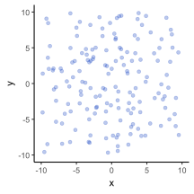
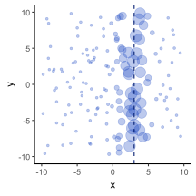
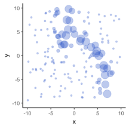
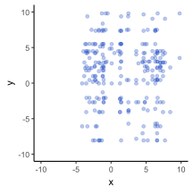
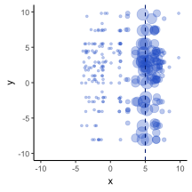

library(tidyverse)
library(ggplot2)10 Particle filter
10.1 Particle filter
Particle filters are used for sampling latent states in systems where we cannot observe all variables directly. This methodology is applied to solve Hidden Markov Models and nonlinear filtering problems. The primary goal of a particle filter is to estimate the posterior density of state variables based on observation variables.
10.1.1 Key terminology
Particles: Samples representing the posterior distribution.
Weighting: Assigning likelihood weights to particles based on their agreement with observations.
Resampling: Selecting particles based on their weights. Particles with higher weights are sampled more frequently. This process is also referred to as Monte Carlo localisation.
10.1.2 Example
A typical example is estimating the position of a robot vacuum on a 2D map of a room. Here’s a simplified example:
- The robot moves on a 2D grid from \((-10, -10)\) to \((10, 10)\).
- Motion model: At each time step, the robot moves a bit in both the x and y directions.
- Measurements: A sensor measures the robot’s position but only provides the \(x\), with some noise.
Given these observations, we want to determine the latent state, which is the robot’s true position on the map. The particle filter accomplishes this through the following steps:
- Initialisation: creating a bunch of samples (particles) of what the system’s state could be.
- Predict: Update each particle’s state based on a model of the system’s dynamics, adding some noise to account for uncertainty.
- Weight: Compare the predicted state of each particle to the actual observation. Assign a weight to each particle based on how well it matches the observation.
- Resample: Select particles based on their weights (higher weight = more likely to be selected). This removes particles with low weights and duplicates particles with high weights
- Repeat: Go back to the predict step and iterate for each time step.
Let us assume the robot starts somewhere near the centre of the room. We generate 300 particles to represent possible initial positions.
# Some helper functions
## Assume a normal likelihood
norm_likelihood <- function(x_loc, x_obs, obs_sd) {
exp(-0.5 * (x_loc - x_obs)^2 / obs_sd^2)
}
## Plot function
plot_pf <- function(data, x_obs = NULL) {
p <- ggplot({{ data }}, aes(x = x, y = y, size = weight)) +
geom_point(color = "#214bc3", alpha = 0.3) +
scale_x_continuous(limits = c(-10, 10), breaks = seq(-10, 10, 5)) +
scale_y_continuous(limits = c(-10, 10), breaks = seq(-10, 10, 5)) +
theme_classic() +
theme(legend.position = "none")
if (!is.null(x_obs)) {
p <- p + geom_vline(xintercept = {{ x_obs }},
color = "#001A6E",
linetype = "dashed")
}
p
}
# Number of particles
N <- 300
particles <- data.frame(x = rnorm(N, 0, 9), y = rnorm(N, 0, 9))
ggplot(particles, aes(x = x, y = y)) +
geom_point(color = "#214bc3", alpha = 0.3) +
scale_x_continuous(limits = c(-10, 10), breaks = seq(-10, 10, 5)) +
scale_y_continuous(limits = c(-10, 10), breaks = seq(-10, 10, 5)) +
theme_classic() +
theme(legend.position = "none")
Now, suppose the sensor reads x_obs = 3. We assume the sensor is noisy, with a standard deviation of 1.
x_obs <- 3
obs_sd <- 1
particles$weight <- norm_likelihood(x_loc = particles$x, x_obs = x_obs, obs_sd = obs_sd)
plot_pf(particles, x_obs)
Next, the robot moves. Assume the robot follows a circular trajectory around the origin in a clockwise direction. The velocity vector is defined as \(v = (-y, x) \times V / \sqrt{x^2 + y^2}\), where \(V\) is the forward velocity.
V <- 5
for (i in 1:10) {
# Extract the first and second columns
x <- particles[, 1]
y <- particles[, 2]
# Calculate the norm
norm <- sqrt(x^2 + y^2)
# Update the predictions
particles[, 1] <- particles[, 1] - 0.1 * y * V / norm
particles[, 2] <- particles[, 2] + 0.1 * x * V / norm
}
plot_pf(particles)
After predicting, we resample to obtain an unweighted set of particles:
set.seed(123)
particles$x <- sample(x = particles$x, size = N, replace = T, prob = particles$weight)
particles$y <- sample(x = particles$y, size = N, replace = T, prob = particles$weight)
ggplot(particles, aes(x = x, y = y)) +
geom_point(color = "#214bc3", alpha = 0.3) +
scale_x_continuous(limits = c(-10, 10), breaks = seq(-10, 10, 5)) +
scale_y_continuous(limits = c(-10, 10), breaks = seq(-10, 10, 5)) +
theme_classic() +
theme(legend.position = "none")
Finally, incorporate a new measurement and repeat the process:
x_obs <- 5
obs_sd <- 1
particles$weight <- norm_likelihood(x_loc = particles$x, x_obs = x_obs, obs_sd = obs_sd)
plot_pf(particles, x_obs)
10.2 POMP
maximum likelihood via iterated filtering
https://kingaa.github.io/short-course/mif/mif.html
10.3 PMCMC
PMCMC stands for Particle Markov Chain Monte Carlo. It’s a full Bayesian approach and basically a way to combine:
- Particle filtering (to sampling hidden states of a system), and
- MCMC (Markov Chain Monte Carlo) (to sampling unknown parameters).
The main components of HMP are:
- Hidden state \(x_t\): This represents the true number of infectious individuals. In an SIR model, the state is “hidden” because:
- Only the I compartment can be observed, while the others are hidden
- There is an observation noise that hide the true value of I
- Time evolution process \(f(x_{t + 1}|x_t)\): The state variable at the next time step \(x_{t + 1}\) is a function of the current state: \(\mathbb{P}(x_{t + 1}) = f(x_{t + 1}|x_t)\), since this is a Markov process.
- Observations \(y_t\): The reported case counts at each time \(t\).
- Observation process \(g(y_t|x_t)\): The probabilistic distribution of observing \(y_t\) is a function of \(x_t\). Typically this is underreporting represented by a binomial process with reporting probability \(\epsilon\): \(\mathbb{P}(y_t) = g(y_t|x_t) = Bin(n = x_t, p = \epsilon)\).
We are interested in the time evolution process \(f(x_{t + 1}|x_t)\), modelled with a set of parameters \(\theta\). The posterior distribution of \(\theta\), when we have the case counts \(y_t\): \(\mathbb{P}(\theta|y_t)\), is:
\[\mathbb{P}(\theta|y_t) \propto \mathbb{P}(y_t|\theta) \cdot \mathbb{P}(\theta)\]
We need to compute the likelihood of the data \(\mathbb{P}(y_t|\theta)\). This likelihood is often referred to as the marginal likelihood, as it is a marginal distribution of \(\mathbb{P}(x_t, y_t|\theta)\) on \(y_t\). For example, if we only have 2 time steps \(t = 1, 2\), we know the initial state \(x_1\).
\[\mathbb{P}(y_2|\theta) = \underbrace{\int \underbrace{\mathbb{P}(y_2|x_2, \theta)}_{y_2 \text{ is what we see from } x_2} \cdot \underbrace{\mathbb{P}(x_2|x_1, \theta)}_{x_2 \text{ depends on } x_1} dx_2}_{\substack{\text{We can't observe } x_2 \text{, it has many possible values,} \\ \text{so must integrate for all possible values of } x_2}}\]
If we have 3 time steps:
\[\mathbb{P}(y_3|\theta) = \int \mathbb{P}(y_3|x_3, \theta) \cdot \mathbb{P}(x_3|x_2, \theta) \cdot \mathbb{P}(x_2|x_1, \theta) \ dx_3 \ dx_2\]
The more time steps we have, the more complicated this computation will be. The generalised form of this is:
\[\mathbb{P}(y_{1:T}|\theta) = \int \mathbb{P}(y_{1:T}|x_{1:T}, \theta) \cdot \mathbb{P}(x_{1:T}| \theta) \ dx_{1:T}\]
Particle filter is a sub-algorithm to approximate the marginal likelihood.
The Markov property allows for the use of particle filtering (Endo et al., 2019). The algorithm:
- For \(t = 1, 2, .. ., T\), sample the current state \(x_t\) using the samples of the previous state \(x_{t−1}\) and the current observation \(y_t\):
\[\begin{align} \mathbb{P}(x_t|y_t) & \propto \mathbb{P}(y_t|x_t) \cdot \mathbb{P}(x_t) \\ \underbrace{\mathbb{P}(x_t| y_t, x_{t - 1}, \theta)}_{\substack{\text{add } x_{t - 1} \text{, } \theta \text{ to the condition}}} &\propto \underbrace{\mathbb{P}(y_t|x_t, x_{t - 1}, \theta)}_{\substack{= \mathbb{P}(y_t|x_t, \theta) \text{ because } y_t \\ \text{ does not depends on } x_{t - 1}}} \cdot \mathbb{P}(x_t|x_{t - 1}, \theta) \\ &= \mathbb{P}(y_t|x_t, \theta) \cdot \mathbb{P}(x_t|x_{t - 1}, \theta) \\ &= g_{\theta}(y_t|x_t) \cdot f_{\theta}(x_t|x_{t - 1}) \end{align}\]
So having \(g_{\theta}(y_t|x_t)\) and \(f_{\theta}(x_t|x_{t - 1})\) we can get the current state \(x_t\):
Generate particles of \(x_t\) given \(x_{t−1}\) on the previous time step based on \(f_{\theta}(x_t|x_{t - 1})\).
Filter those particles so that only those consistent with the observation \(y_t\) are selected based on \(g_{\theta}(y_t|x_t)\).
Using the produced \(x_{1:T}\) to approximate the marginal likelihood \(\mathbb{P}(y_{1:T}|\theta)\). First, apply the chain rule of probabilities on \(\mathbb{P}(y_{1:T}|\theta)\):
Chain rule of probabilities
\[\begin{align} \mathbb{P}(A_1, A_2, A_3) &= \mathbb{P}(A_3|A_2, A_1) \cdot \mathbb{P}(A_2, A_1) \\ &= \mathbb{P}(A_3|A_2, A_1) \cdot \mathbb{P}(A_2|A_1) \cdot \mathbb{P}(A_1) \\ &= \mathbb{P}(A_1) \cdot \mathbb{P}(A_2|A_1) \cdot \mathbb{P}(A_3|A_2, A_1) \end{align}\]
\[\begin{align} \mathbb{P}(y_{1:T}|\theta) &= \mathbb{P}(y_1|\theta) \cdot \mathbb{P}(y_2|y_1, \theta) \cdot \mathbb{P}(y_3|y_2, y_1, \theta) \cdots \mathbb{P}(y_T|y_{1:T-1}, \theta) \\ &= \mathbb{P}(y_1|\theta) \cdot \prod^{T}_{t = 2} \mathbb{P}(y_t|y_{1:t - 1},\theta) \end{align}\]
In which:
\[\mathbb{P}(y_1|\theta) = \int \mathbb{P}(y_1|x_t, \theta) \cdot \underbrace{\mathbb{P}(x_t, \theta) dx_t}_{\substack{\text{because we add } x_t \\ \text{ to the condition}}}\]
\[\prod^{T}_{t = 2} \mathbb{P}(y_t|y_{1:t - 1},\theta) = \prod^{T}_{t = 2} \int \mathbb{P}(y_t|x_t, y_{1:t - 1}, \theta) \cdot \mathbb{P}(x_t|y_{1:t - 1}, \theta) \ dx_t\]
10.4 PMCMC algorithm
- Arbitrarily choose an initial parameter value \(\theta^{(0)}\) (step \(n = 0\)). Run particle filtering to generate samples \(X_{1:T}\) and the approximated marginal likelihood \(\mathbb{P}(y_{1:T}|\theta^{(0)})\). Randomly choose one trajectory \(x^{(0)}_{1:T}\) from \(X_{1:T}\).
- For step \(n \geq 1\), use the previous parameter value \(\theta^{(n - 1)}\) to propose a new value \(\theta^{*(n)}\) by sampling from the proposal distribution \(q(\theta^{*(n)}; \theta^{(n - 1)})\).
- Run particle filtering to generate samples \(X^{*}_{1:T}\) and the approximated marginal likelihood \(\mathbb{P}(y_{1:T}|\theta^{*(n)})\). Randomly choose one trajectory \(x^{*(n)}_{1:T}\) from \(X^{*}_{1:T}\).
- Compare the marginal likelihood with that in the previous step, with probability:
\[min \Big[ 1, \frac{\mathbb{P}(y_{1:T}|\theta^{*(n)})}{\mathbb{P}(y_{1:T}|\theta^{(n - 1)})} \cdot \frac{q(\theta^{(n - 1)}; \theta^{(*n)})}{q(\theta^{*(n)}; \theta^{(n - 1)})} \Big]\] update \(\theta^{(n)} = \theta^{*(n)}\) and \(X^{(n)}_{1:T} = X^{*(n)}_{1:T}\). Otherwise, keep the values from the previous step: \(\theta^{(n)} = \theta^{(n - 1)}\) and \(X^{(n)}_{1:T} = X^{(n - 1)}_{1:T}\)
- Repeat 2-4 until the Markov-chain converges.